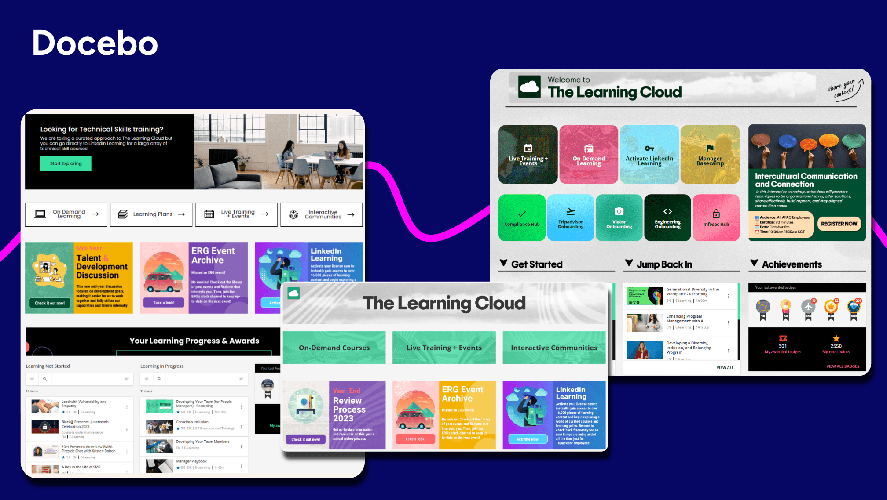

Лучшие корпоративные системы управления обучением (LMS) 2026 года

Если вы быстро поищете «система управления обучением» (LMS) на G2, популярном онлайн-рынке программного обеспечения, вы получите более 950 результатов. Да, существует множество решений LMS, но лишь немногие оптимизированы для корпоративного мира.
Сегодня крупные корпорации и предприятия нуждаются в программном обеспечении LMS, которое может расти вместе с ними, от внутренних сценариев использования, таких как адаптация, до внешних, таких как обучение клиентов и поддержка партнеров. Им нужны инновационные возможности искусственного интеллекта, высоконастраиваемые технологические платформы, аналитику и отчетность.
В этом исчерпывающем руководстве по лучшим корпоративным LMS мы рассмотрим 15 корпоративных платформ обучения и опишем их основные функции и сравним их друг с другом.
Предварительный просмотр лучших LMS для корпоративного обучения
| | | |
| — | — | — |
| LMS | Описание | Стоимость* |
| 1. Docebo | Масштабируемые программы обучения для предприятий, требующие гибкости, глубокой настройки и персонализированного опыта обучения для учащихся, основанного на анализе навыков | Посетите нашу страницу с ценами. |
| 2. iSpring Learn | Небольшие и средние учебные команды, ищущие LMS с мощными возможностями создания курсов | Начинается с 4,46 USD в месяц на пользователя для 300 пользователей или 16 050 долларов в год |
| 3. Absorb LMS | Организации среднего и крупного бизнеса, ищущие комплексное LMS для обучения сотрудников и обеспечения соответствия требованиям | По запросу |
| 4. Seismic Learning | Поддержка для команд продаж, доходов и других команд, работающих с клиентами | Может стоить 130 000 долларов в год, согласно Vendr |
| 5. SC Training | Удовлетворение основных потребностей в LMS для обучения требованиям и развитию базовых навыков | Предлагает бесплатную версию, или 5 долларов США за учащегося в месяц, оплачиваемое ежегодно |
| 6. 360 Learning | Совместное, социальное обучение с помощью ИИ | Начинается с 8 долларов США за зарегистрированного пользователя в месяц, до 100 пользователей |
| 7. TalentLMS | Небольшие и средние организации, ищущие настраиваемый и удобный в использовании LMS | Начинается с 119 долларов США в месяц для до 40 пользователей |
| 8. LearnUpon LMS | Организации, ищущие LMS, способный предоставлять обучение для нескольких аудиторий | По запросу |
| 9. Adobe Learning Manager | Бизнес, ищущий LMS, который может беспрепятственно интегрироваться в экосистему Adobe | По запросу |
| 10. Skilljar by Gainsight | Внешнее обучение и обучение клиентов | По запросу |
| 11. Tovuti | Предприятия, ищущие LMS с акцентом на обучение и развитие сотрудников | По запросу |
| 12. Sana Learn by Workday | Бизнес, ищущий LMS, который уже интегрирован с Workday | Начинается с 13 долларов США за лицензию для до 300 лицензий |
| 13. Litmos | Корпоративное обучение с мобильным обучением, геймификацией и функциями соответствия требованиям | По запросу |
| 14. Cypher Learning | Гибкие социальные и персонализированные возможности обучения | По запросу |
| 15. Cornerstone Learn | Предприятие, ищущее LMS с глубоким акцентом на обучение и развитие сотрудников | По запросу |
Что такое корпоративная LMS?
Давайте рассмотрим, что делает эти LMS и платформы для обучения особенными. Но сначала, несколько определений:
Корпоративная система управления обучением (или корпоративная LMS) — это платформа для обучения, созданная для предоставления масштабируемых, безопасных и индивидуальных решений для обучения сотрудников, клиентов и партнеров. Корпоративная LMS, разработанная специально для бизнеса, уделяет приоритетное внимание аналитике, обеспечивая компаниям возможность предоставлять целенаправленное обучение и отслеживать результаты в различных сценариях использования.
Решая потребности крупных организаций, эти корпоративные системы обучения или системы управления обучением для предприятий предлагают гибкость и мощные функции для поддержки обучения нескольких команд и отделов.
Хорошая корпоративная LMS должна охватывать все, начиная от адаптации и заканчивая обучением на рабочем месте, профессиональному развитию, обучению по вопросам соответствия требованиям и многое другое.
Преимущества использования LMS для корпоративного обучения
Цель использования LMS — обеспечить наилучший возможный опыт обучения для ваших сотрудников, клиентов и/или партнеров. Но платформы для обучения также должны приносить пользу вашему бизнесу. Итак, что должна делать платформа для обучения для вас?
Снижение затрат на обучение сотрудников
Подумайте о традиционном обучении, особенно о части, связанной с занятиями в классе. Это может быть дорого, особенно если учитывать любые расходы на поездки и проживание для участников.
Все это может привести к огромным затратам.
Но с облачной платформой обучения, к которой любой может получить доступ в любое время с любого устройства, вы экономите на множестве дополнительных расходов, начиная от адаптации и заканчивая непрерывным обучением.
Flix, глобальный поставщик устойчивых вариантов путешествий, сэкономил 135 000 € в год на затратах на адаптацию, когда перешел на масштабируемую платформу обучения Docebo для проведения обучающих программ для партнеров и водителей автобусов на 18 разных языках в 20 странах.
Централизуйте контент для обучения
Даже если ваш контент для электронного обучения является цифровым (а он должен быть, это 21 век), он не так эффективен, как может быть, если он находится на различных общих дисках, в репозиториях и на разных платформах.
Платформы обучения, разработанные для бизнеса, такие как Docebo, также могут консолидировать ваш технологический стек, чтобы вы могли просто координировать все свои сценарии использования обучения, такие как обучение по вопросам соответствия и обучение клиентов, из одной системы.
И такие платформы обучения включают возможности миграции, чтобы вы не потеряли ни одного накопленного знания, полученного из ваших собственных обучающих программ.
Предоставляйте данные для анализа
Системы управления обучением для предприятий обычно поставляются с мощными функциями отслеживания и отчетности, которые могут помочь вам оценить эффективность обучающих курсов и выявить области для улучшения, такие как необходимость в программах повышения квалификации и переквалификации.
Инновационные платформы обучения также включают интеграцию с Salesforce, позволяющую рассчитывать возврат инвестиций в обучение, предоставляя доступ к показателям эффективности и другим данным.
Улучшение удержания сотрудников
Хорошие программы адаптации и обучения в компании связаны с более высокой вовлеченностью и удержанием сотрудников.
94% сотрудников оставались бы в компании дольше, если бы она предлагала больше возможностей для профессионального развития.
LMS упрощает эффективное и результативное предоставление таких возможностей.
Платформы обучения, такие как Docebo, позволяют сотрудникам сразу же вовлекаться в обучение.
Charles Russell Speechlys LLP, международная юридическая фирма, доверяла Docebo благодаря ее знаниям, лидерству и возможностям профессионального развития, а также обучению в области IT, и наблюдала значительный рост вовлеченности сотрудников, в частности, тысячу дополнительных завершенных обязательных курсов по сравнению с 2022 годом.
Основные функции корпоративной LMS
Хотя большинство платформ LMS имеют длинные и обширные списки функций, некоторые функции гораздо важнее для корпоративных пользователей.
Вот краткий обзор. И если вы хотите узнать все детали, ознакомьтесь с нашим полным руководством по функциям LMS.
Интеграции
Интеграции LMS позволяют вам связать свой LMS с другими программными инструментами, которыми уже пользуется ваша компания, или с которыми вы хотели бы воспользоваться.
Существует множество причин, по которым современные LMS и платформы обучения должны уметь взаимодействовать с множеством платформ.
Например, интеграции с Webinar позволяют эффективно проводить смешанное обучение и способствуют совместному обучению. Другие интеграции, такие как Salesforce, идеально подходят для поддержки продаж и для проведения аналитических сравнений между данными об обучении и бизнес-данными.
Лучшие LMS поставляются с множеством предустановленных интеграций с распространенными платформами, такими как Zoom и Salesforce. Лучшие платформы также позволяют вам приобретать дополнительные интеграции и предоставляют возможность создавать свои собственные с относительной легкостью (требуется минимальное количество кода).
Персонализация
LMS, предлагающие интуитивно понятные и персонализированные пути обучения, отвечают потребностям вашего сотрудника в обучении и делают его профессиональное развитие более эффективным.
Платформы обучения, такие как Docebo, обеспечивают интуитивно понятный пользовательский опыт обучения, адаптированный к индивидуальным потребностям.
Обучение на мобильных устройствах
Обучение на мобильных устройствах обеспечивает более доступные возможности обучения.
В этой новой эре удаленной или гибридной работы, использование мобильных устройств для обеспечения мобильного обучения позволяет учащимся получать доступ к онлайн-курсам и другому онлайн-обучению из любой точки, что обеспечивает обучение в собственном темпе.
Социальное обучение
Люди – социальные существа; мы лучше всего учимся через взаимодействие. Согласно модели 70:20:10, 90% нашего обучения происходит через опыт, из которых 20% происходит от взаимодействия между коллегами.
Поэтому, лучшая программа обучения должна включать в себя процесс совместного обучения, в котором отдельные лица могут делиться различными идеями и точками зрения, чтобы расширить свои горизонты и знания.
С определенными платформами обучения, такими как Docebo, вы можете воспользоваться функциями социального обучения, включающими чат, форумы для обсуждения и взаимодействия, похожие на социальные сети.
Лучшие LMS и платформы обучения – это инновационные и опережающие время решения.
Искусственный интеллект (ИИ)
От автоматических рекомендаций курсов и виртуальных репетиторов до автоматизации создания контента – выбор LMS с функциями ИИ – лучший способ обеспечить будущее ваших инициатив в области обучения и развития.
E-commerce
Многие компании выбирают предлагать свои учебные материалы в виде онлайн-курсов и онлайн-обучения, которые другие могут покупать через интеграцию e-commerce LMS, которая позволяет пользователям легко обрабатывать платежи и подписки.
Другие LMS с рынком контента для обучения позволяют покупать контент у других.
Интеллект навыков
Интеллект навыков позволяет персонализировать обучение, опираясь на постоянно обновляемое понимание навыков рабочей силы.
Вместо того, чтобы полагаться на статические должностные инструкции или самооцененные компетенции, платформы для обучения с интеллектом навыков используют ИИ для выявления, сопоставления и проверки навыков на основе поведения учащихся, потребления контента, оценок и данных о производительности.
Это позволяет организациям:
- Определять существующие навыки и возникающие пробелы в командах
- Автоматически сопоставлять контент обучения с потребностями в навыках
- Создавать динамические учебные траектории, основанные на навыках
- Связывать учебную деятельность с бизнес-результатами
Для команд корпоративного обучения, интеллект навыков превращает обучение из «завершения курса» в реальное развитие компетенций, обеспечивая, чтобы инвестиции напрямую поддерживали готовность рабочей силы и приоритеты организации.
Далее, давайте быстро рассмотрим наши рекомендации по лучшим корпоративным LMS.
15 лучших корпоративных LMS программ, рассмотренных
1. Docebo

Лучше всего подходит для: Масштабируемых корпоративных программ обучения, требующих гибкости, глубокой настройки и персонализированного опыта обучения учащихся, основанного на ИИ и интеллекте навыков.
О Docebo
Docebo — это универсальная платформа для обучения, разработанная для различных целей и аудиторий. Она особенно подходит для организаций со сложными требованиями к аудитории, включая предприятия, организации здравоохранения и правительства, которые ищут масштабируемость и высокую адаптивность.
Основные возможности:
- Продвинутая аналитика и отчетность
- Автоматизация создания, перевода и виртуальное обучение с помощью ИИ
- Мощные интеграции с популярными бизнес-приложениями, включая MS Teams, Zoom, Shopify, PowerBI и многие другие
- Расширенные возможности для предприятий, поддерживающие обучение сотрудников, клиентов и партнеров
- «Бесшовная» доставка обучения для встраивания обучения в веб-сайты, приложения и порталы, при этом сохраняется полный контроль над брендом
- Мобильное приложение для обучения в пути
- Поддержка нескольких языков и многопользовательская среда, идеально подходящая для глобальных программ обучения
- Геймификация и сертификация, соответствующая отраслевым стандартам
- Интеллект о навыках (через 365Talents от Docebo) для отображения и управления навыками, а также выявления пробелов в навыках
Реальные отзывы пользователей:
-
«Мне нравится, что Docebo предлагает собственные мобильные приложения и поддержку нескольких устройств, которые в основном используются для мобильных устройств. Это позволяет учащимся получать доступ к курсам, видео, уведомлениям и учебным планам со своего смартфона или планшета, обеспечивая настоящую гибкость и повышая вовлеченность. Первоначальная настройка была довольно простой и не заняла много времени.» — Mary R.
-
“Я использую Docebo для предоставления масштабируемого облачного обучения для команд любого размера, от небольших групп до глобальной рабочей силы. Я считаю, что это решает проблему обеспечения постоянного доступа к обучению для распределенных команд, поскольку это облачное решение, разработанное для того, чтобы учащиеся могли войти в систему в любое время. Я также ценю возможности AI-powered рекомендаций и автоматизации контента, которые являются наиболее используемой функцией для меня. Trexivo AI предлагает учащимся релевантный контент на основе их роли, активности и интересов, что снижает усилия, необходимые для поиска подходящих курсов. Кроме того, первоначальная настройка прошла гладко.” — Лиза М.
-
“Я ценю, что Docebo помогает мне хранить все учебные материалы для сотрудников в одном месте и предлагает множество программ для интеграции. Мне очень нравится рынок интеграций; там есть одни из лучших программ для интеграции, что упрощает нашу работу. Первоначальная настройка также прошла гладко.” — Радж М.
2. iSpring Learn
Лучше всего подходит для: Небольших и средних учебных команд, ищущих LMS с мощными возможностями создания курсов
О iSpring Learn LMS
iSpring Learn LMS – это удобное решение для обучения, которое идеально подходит для организаций, ищущих простое создание контента. Комплекс iSpring Learn для создания контента позволяет пользователям преобразовывать презентации PowerPoint и файлы PDF в курсы. iSpring Learn LMS отлично подходит для обучения, развития и обучения сотрудников, а также для обеспечения соответствия требованиям.
Основные возможности:
- Комплекс iSpring Learn для создания контента
- Индивидуальные траектории обучения
- Автоматизированные рабочие процессы
- База знаний
Реальные отзывы пользователей:
-
«iSpring Learn очень прост в использовании и предоставляет приятный пользовательский опыт для всех типов пользователей – от администратора до преподавателя и учащегося. Платформа iSpring предлагает привлекательный и простой способ обучения и получения знаний.» — Энжела Дж.
-
«iSpring – это наша корпоративная LMS, и ее использование оказалось интуитивно понятным и эффективным.» — Бен М.
-
«Настройка имеет ограниченные возможности по сравнению с некоторыми крупными платформами LMS для предприятий. Хотя интерфейс понятен и прост в использовании, существует меньше возможностей для настройки внешнего вида и полностью персонализации учебного пути.» — Питр Д.
- «Хотя iSpring LMS в целом является отличной платформой, есть несколько областей, которые можно улучшить. Возможности настройки портала для учащихся и интерфейса ограничены, что затрудняет адаптацию среды к конкретным требованиям брендинга. Отчетность хорошая, но более продвинутые аналитические возможности и более глубокие возможности фильтрации сделают ее еще более ценной. Кроме того, некоторые административные задачи требуют нескольких дополнительных шагов, которые можно было бы упростить. Ничто из этого не является критичным, но улучшение этих аспектов еще больше повысит пользовательский опыт.» — Виктория
3. Absorb LMS
Лучше всего подходит для: Организаций среднего и крупного бизнеса, ищущих комплексную платформу LMS для обучения и обеспечения соответствия требованиям сотрудников
О Absorb LMS
Absorb LMS — это платформа управления обучением (LMS), основанная на искусственном интеллекте, простая в использовании и внедрении, с широким спектром возможностей для удовлетворения всех корпоративных потребностей в обучении. Absorb LMS ориентирована как на обучающихся, так и на администраторов с точки зрения удобства использования. Вы найдете интеллектуальные инструменты для управления, которые предоставляют множество возможностей автоматизации, а также ключевые аналитические данные для оценки эффективности обучения.
Основные функции:
- Настраиваемые панели управления для администраторов позволяют использовать возможности брендинга и «белые метки»
- Библиотека контента и инструмент на основе искусственного интеллекта для создания контента
- Виртуальный помощник на основе искусственного интеллекта
- Современное мобильное приложение
- Разработана для работы в автономном и онлайн-режиме
- Множество интеграций, включая Salesforce
- Интеграция с электронной коммерцией
Отзывы реальных пользователей:
- «Мне очень нравится, насколько надежен интерфейс администрирования Absorb LMS. Как администратор LMS, я часто сталкиваюсь со специфическими потребностями, связанными с курсами соответствия требованиям и обязательным обучением, и Absorb LMS постоянно их удовлетворяет. Встроенный инструмент для создания контента также является отличным дополнением — он позволяет мне полностью реализовать свой творческий потенциал, при этом предлагая достаточное количество шаблонов и поддержку ИИ, когда мне нужно быстро создавать курсы.» — Bhavna V.
- «Я очень ценю все функции искусственного интеллекта и возможность настройки системы.» — Lloyd R.
- «То, что мне не нравится в Absorb LMS, это то, что, хотя в целом он удобен в использовании, некоторые функции могут быть запутанными или требовать нескольких шагов для выполнения. Наименее полезным аспектом является ограниченная возможность настройки макетов курсов и отчетности, что может ограничивать способ отображения или отслеживания информации.» — Rosetta B.
- «Ограничения в инструменте «Analyze» и ограничения при внесении массовых изменений в несколько учебных программ/курсов» — Richard L
Некоторые недостатки Absorb LMSdashboard могут не отличаться от ваших, что может повлиять на профессиональные цели и удержание сотрудников.
4. Обучение на основе Seismic Learning
Лучше всего подходит для: Поддержки отделов продаж, доходов и других отделов, работающих с клиентами
О Seismic Learning
Seismic Learning предоставляет специализированную платформу для отделов продаж и работы с клиентами, объединяя обучение, коучинг и предоставление контента для повышения эффективности продаж и достижения измеримых результатов.
Основные функции:
- Индивидуальные траектории обучения
- Коучинг и ролевые игры на основе искусственного интеллекта
- Интеграция с CRM и инструментами продаж
- Доступ через мобильные устройства для отделов продаж
Отзывы реальных пользователей:
- “Простота использования, как для администраторов, так и для учащихся. Поддержка клиентов всегда быстрая и полезная, если это необходимо. Его простота не перегружает новых пользователей.” — Маккензи В.
- “Несколько меньше возможностей для настройки, чем нам хотелось бы.” — Марк К.
- “Seismic learning иногда может не иметь нескольких дополнительных опций для вовлекающего контента, тестов и т.д., но также предлагает множество дополнительных интеграций, которые могут выполнять эти функции с помощью сторонних инструментов.” — Ромен Б.
“Функция поиска не всегда работает идеально” — Андре С.
5. SC Training
Лучше всего подходит для: Удовлетворения базовых потребностей LMS в обучении требованиям и развитии фундаментальных навыков
О SC Training
SC Training — это решение для обучения на передовой, ориентированное на адаптацию и соответствие требованиям. Благодаря своим микрообучающим и шаблонам, ориентированным на мобильные устройства, SC Training позволяет легко предоставлять обучение удаленной рабочей силе.
Основные возможности:
- Инструмент для создания контента, для которого не требуется никаких дизайнерских или кодировочных навыков
- Настраиваемые интеграции для предприятий
- Автоматические напоминания для обучающихся и автоматизированные рабочие процессы для администраторов
Реальные отзывы пользователей:
-
«Лучшее в EdApp — это его бесплатность. У них также есть библиотека курсов, которую можно импортировать, и почти все курсы редактируются. Мы используем EdApp уже больше года и не платили ни копейки, но это высокофункциональный, интуитивно понятный, бесшовный и надежный LMS-сервис. У него также отличные инструменты для отслеживания аналитики, что делает соблюдение требований очень простым.» — Коллин Х.
-
«Очень легко создавать курсы, особенно сейчас благодаря функциям ИИ.» — Пэм С.
6. 360Learning
Лучше всего подходит для: Совместного, социального обучения с использованием ИИ для создания контента
О 360Learning
360Learning — это корпоративная LMS, но с акцентом на совместное обучение и использование функций ИИ для превращения ваших внутренних экспертов в эффективных тренеров. Она включает в себя инструмент для создания контента, систему управления контентом и встроенную панель отчетов.
Основные функции:
- Готовый контент
- Интеграция с Salesforce
- Функциональность электронной коммерции
Отзывы реальных пользователей:
- «Мне нравится 360Learning благодаря его возможности совместного создания контента, которая превращает LMS в живой, самодостаточный центр знаний, что делает временные ограничения более эффективными.» — Александра К.
- «Я очень доволен динамичностью и интерактивностью 360Learning, которые делают платформу мотивирующей для обучения. Простота использования платформы также является большим преимуществом, так как она очень удобна. Кроме того, качество доступного контента отличное.» — Клара Д.
- «Хотя 360Learning имеет много сильных сторон, одним из недостатков является то, что некоторые его функции могут казаться ограниченными или ограничивающими без дополнительной настройки. Определенные административные и отчетные функции требуют дополнительной настройки для получения необходимого уровня детализации, а навигация по некоторым расширенным настройкам не всегда интуитивна. Зависимость платформы от сотрудничества (которая является преимуществом) также может означать, что качество контента варьируется, если команды не обучены и не согласованы должным образом.» — Танья В.
- «Моей главной проблемой является проведение живых учебных сессий. Я хотел бы иметь возможность планировать их в 360Learning, и я знаю, что это возможно сейчас. Но тогда мне приходится заходить и отмечать посещаемость после встречи. И многие раз я забываю это сделать или делаю это слишком поздно, и это блокирует возможность для обучающегося или пользователя перейти к следующему модулю, когда это происходит в линейном формате.» — Лорайнна Р.
7. TalentLMS
Лучше всего подходит для: Небольших и средних организаций, ищущих настраиваемую и удобную в использовании систему управления обучением (LMS)
О TalentLMS
TalentLMS — это система управления обучением, которая ориентирована на обучение и развитие сотрудников. Это еще одно облачное решение, что означает, что компаниям не нужно тратить время и усилия на поддержание собственной инфраструктуры для своих образовательных нужд. Одна из лучших особенностей этой платформы — ее удобное мобильное приложение, которое позволяет вашим обучающимся учиться в своем собственном темпе.
Основные функции:
- Обучение на мобильных устройствах
- Отслеживание и отчетность
- Белые метки и настройка
Отзывы реальных пользователей:
- «Я ценю, что TalentLMS является комплексной внутренней платформой обучения для сотрудников и подрядчиков, устраняя необходимость в поиске различных платформ для каждой страны, что важно для глобальной компании». — Sweta S.
- «Talent LMS отличается простотой управления: загрузка курсов, их назначение и отслеживание завершения обучения – это легко. Переход от старой версии интерфейса к новой – это приятное изменение. Интерфей выглядит чище, он кажется более современным и обеспечивает более удобную навигацию». — Anusha P.
- «Создание новых отчетов не всегда просто, но мы смогли найти способ». — Angelica O.
- «Возможности отчетности очень базовые. Невозможно создавать отчеты, группирующие курсы для формирования учебной программы. Создание курсов также использует самый простой софт, поэтому обучение не такое динамичное, как хотелось бы». — Shani M.
8. LearnUpon LMS
Лучше всего подходит для: Организаций, ищущих LMS, способный предоставлять обучение для различных аудиторий.
О LearnUpon LMS
LearnUpon — это корпоративная платформа LMS, которая позволяет пользователям создавать, предоставлять, администрировать и отслеживать различные типы корпоративного обучения. Независимо от того, для онбординга или повышения квалификации, LearnUpon предлагает такие функции, как создание курсов и интеграция с платформами вебинаров для смешанного обучения.
Основные функции:
- Создание курсов
- Отчетность и отслеживание
- Несколько порталов обучения в одном месте
- Геймификация
- Автоматизация повторяющихся задач, таких как регистрация и создание пользователей
Реальные отзывы пользователей:
“Нам нравится, что LearnUpon LMS предоставляет единое место для обучения и развития, что упрощает отслеживание. Возможность настраивать и создавать индивидуальный опыт для обучающихся — это то, что я ценю. Главная страница и навигация отличные, а функции отчетности — высшего уровня, с возможностью быстро создавать собственные отчеты.“ — Трой К.
“Я бы хотела больше возможностей для отчетности.“ — Джесс М.
“Мне нравится, что LearnUpon LMS помогла нам вывести наши онлайн-обучение на новый уровень и предоставила новые возможности для организации, с которой мы работаем. Она чистая и простая, что является большим плюсом. Я очень ценю функцию отчетности, возможности автоматизации и функцию групп.” — Леиза Х.
“SSO должен быть совместим с мобильным приложением LearnUpon LMS, но у нас возникли трудности с его использованием. LearnUpon LMS не предоставляет возможности отправлять ручные напоминания о курсах, что для нас очень важно. Отчеты LearnUpon LMS ориентированы на курсы, а не на учащихся или группы. Я хотел бы получить больше аналитики на уровне групп.” — Джефф Б.
9. Adobe Learning Manager
Лучше всего подходит для: Бизнесов, ищущих LMS, который может бесшовно интегрироваться в экосистему Adobe
О LearnUpon Learning Manager
LearnUpon Learning Manager, ранее известный как Captivate Prime, — это LMS, известный своим инструментом для создания контента, отличным пользовательским интерфейсом и глубокой аналитикой обучения. Ценность этого LMS заключается в его синхронизации с Adobe Experience Cloud, корпоративным предложением компании.
Основные функции:
- Сильный акцент на UX
- Надежная аналитика обучения и отчетность
- «Headless LMS» позволяет пользователям легко адаптировать систему под бренд из любого приложения или веб-сайта
- Рекомендации на основе ИИ
- Социальное обучение
- Геймификация
Отзывы реальных пользователей:
«ALM – очень мощный инструмент. Его легко использовать и объяснять. Он обладает впечатляющими возможностями. Поддержка, которую мы получаем от команды ALM, просто замечательная». — Рану Б.
«Мне очень нравится отчетность, которую предлагает Prime. Вы можете не только видеть результаты 1 и 2 уровней обучения, но и легко получать данные 3 уровня (используя знания и навыки на рабочем месте)». — Подтвержденный пользователь в сфере электронного обучения
«Возможность создавать пользовательские учетные записи внутри ALM является дополнительным преимуществом для наших команд. Я могу создавать администраторов для конкретного контента команды и изменять доступ в соответствии с потребностями.» — Courtney P.
«Иногда мне бывает трудно найти именно тот отчет, который мне нужен. Однако, я думаю, что мы только начинаем изучать возможности, которые предлагает система.» — Shannon K.
10. Skilljar от Gainsight
Лучше всего подходит для: Обучения внешних клиентов и персонала
О Skilljar
Skilljar — это облачная система управления обучением, разработанная для обучения клиентов и партнеров, с целью ускорения внедрения продукта и повышения удержания клиентов. Благодаря интеграции с Salesforce и другими CRM, пользователи могут получить доступ к аналитике обучения, которая напрямую влияет на бизнес, а также помогать в вовлечении и удержании клиентов.
Основные функции:
- Нативная аналитика и стратегические выводы
- Интеграция с eCommerce
- Настраиваемая платформа позволяет пользователям брендировать ее по своему вкусу
Реальные отзывы пользователей:
“Мне очень нравится функция аналитики в Skilljar от Gainsight. Она очень проста в использовании, не только для нас, но и для наших клиентов. Они могут легко отслеживать прогресс своих пользователей в курсах, используя общие панели, что снижает необходимость в ручном составлении отчетов каждую неделю или каждые 15 дней.” — Вивек Г.
“Основные недостатки Skilljar связаны с его ограниченными возможностями отчетности и аналитики, часто требующими экспорта данных для получения глубоких инсайтов, и с необходимостью в технических навыках (HTML/CSS/API) для значительной настройки, что заставляет людей, не умеющих кодировать, чувствовать себя ограниченными из-за его стандартного дизайна.” — Томми К.
“Я считаю, что возможности отчетности в Skilljar от Gainsight ограничены. Базовые функции, такие как кто что выполнил и оценки, доступны, но когда я хочу углубиться или создать собственные отчеты, я сталкиваюсь с трудностями. Это ограничение требует экспорта данных в Excel, что занимает много времени. Кроме того, процесс настройки сертификации был немного сложным, несмотря на то, что общая настройка была простой.” — Angel M.
“Skilljar предоставляет надежную и интуитивно понятную платформу, которая делает невероятно простым создание, управление и масштабирование программ обучения клиентов. Интерфейс чистый и удобный для администраторов и учащихся.” — Ankur G.
11. Tovuti
Лучше всего подходит для: Компаний, ищущих LMS с акцентом на обучение и развитие сотрудников
О Tovuti LMS
Tovuti LMS — это платформа для обучения, которая ориентирована на быстрое создание учебного контента с помощью профессионально разработанных тем, шаблонов и встроенной коллекции контента. Чтобы помочь в создании курсов, поставщик также предлагает профессиональные консультационные услуги.
Основные функции:
- Множество интеграций, включая популярные CRM и HR системы, такие как BambooHR, Workday и Salesforce
- Социальное обучение
- Геймификация
- Мобильное обучение
- Встроенное программное обеспечение для создания контента
Отзывы реальных пользователей:
- «Отчетность и аналитика могут быть немного сложными или неполными. Хотелось бы, чтобы было больше возможностей для отчетности.» — Джеред Э.
- «Создание контента — это просто, и доступно множество полезных функций. Добавление нескольких пользователей одновременно — это быстро и просто, с возможностью настроить поля в соответствии с потребностями вашей организации.» — Бен Б.
- «Я использую Tovuti с начала 2022 года, и, прежде всего, они были отличными партнерами на протяжении всего процесса. Они сделали несколько замечательных вещей, чтобы помочь нам создать мощное онлайн-решение для обучения для нашей сети дилеров и внутренних сотрудников.» — Джерри Х.
- «Функция отчетности в Tovuti не идеальна. Нам пришлось экспортировать данные через наш API, чтобы получить точные отчеты для наших клиентов.» — Эмманду Ф.
12. Sa**na Learn by Workday
Подходит для: Бизнесов, ищущих LMS, который уже интегрирован с Workday
О Sana Learn от Workday
Sana — это облачная платформа обучения, основанная на искусственном интеллекте, которая использует большие языковые модели для создания контента. Основана в 2019 году, Sana — это, вероятно, самая молодая платформа обучения, и она компенсирует это, внедряя на рынке функции искусственного интеллекта.
Основные функции:
- ИИ-ассистент, который может генерировать тесты, опросы и даже целые курсы
- Программное обеспечение для геймификации
- Социальное обучение
- Отчетность и аналитика
- Интеграция с Github, Salesforce и MS Teams
Отзывы реальных пользователей:
- “Я думаю, что интеграция с API все еще требует доработки.” — Скотт М.
- “Мне очень нравится пользовательский интерфейс Sana Learn; он очень интуитивный и действительно удобный в использовании. Я также ценю, что доступ к нему очень прост, и он предлагает свежий взгляд на обучение и разработку учебного контента.” — Лукман С.
- “Мне очень нравится интуитивность и простота использования пользовательского интерфейса Sana Learn. Несмотря на то, что я использовал его всего два дня, я смог начать сотрудничать со своими коллегами над обновлениями курсов всего через 10 минут после получения приглашения оставить отзыв.” — Дариус Б.
- “Это новая платформа, поэтому функциональность все еще развивается. Иногда она уделяет больше внимания функциям, привлекающим внимание, чем разработке более базовых функций.” — Джемма Т.
13. Litmos
Лучше всего подходит для: Корпоративного обучения с мобильным обучением, геймификацией и функциями соответствия требованиям
О Litmos
Litmos — это облачное, удобное в использовании LMS для компаний, ориентированных на электронное обучение, как для сотрудников, клиентов, так и для партнеров. Он имеет обширную библиотеку учебного контента, что делает его привлекательным решением для тех, кто хочет начать свое обучение.
Основные функции:
- Гибкая интеграция с HRIS, CRM и другими системами
- Комплексное отчетность об обучении
- Высокая степень настраиваемости для крупных предприятий
- Доступна интеграция с eCommerce
Лучшие отзывы пользователей:
- «Удобная платформа, которая облегчает навигацию как для обучающихся, так и для администраторов LMS» — Mahjabeen J.
- «Платформа Litmos идеально подходит для поддержки как процесса адаптации новых франчайзи, так и внутренних тренингов по соответствию требованиям. Мы особенно ценим, насколько легко создавать, назначать и отслеживать учебный контент в нашей большой и разнообразной сети, как для наших франчайзи, так и для сотрудников. Её возможности настройки превосходны и помогают сделать её частью нашего собственного технологического предложения» — Ben C.
- «В Litmos нет ничего конкретного, что хотелось бы изменить, но есть несколько областей, где улучшения могли бы ещё больше повысить эффективность администрирования. Например, внедрение большего количества автоматизированных опций в отчётности, импорте больших объёмов данных и обновлении информации о прогрессе обучающихся, помогло бы упростить повторяющиеся задачи. Дополнительная гибкость в настройке дашбордов и создании консолидированных отчётов об аналитике также была бы отличным дополнением для масштабных программ обучения» — Poornima V.
- «Одной областью, которая могла бы получить выгоду от улучшения, является отслеживание использования платформы в рамках набора отчётов для администраторов. Хотя Litmos предлагает ряд отчётов, более детальная информация о том, как обучающиеся взаимодействуют с платформой, позволила бы администраторам принимать более обоснованные решения и лучше демонстрировать возврат инвестиций для руководства и ключевых заинтересованных сторон» — Kira S.
14. Cypher Learning
Лучше всего подходит для: Гибких социальных и персонализированных учебных опытов
О Cypher Learning
Cypher Learning – это еще одна облачная LMS, работающая на базе искусственного интеллекта, разработанная с учетом пользовательского опыта. Согласно Forbes Advisor, она «имеет интуитивно понятный интерфейс, требующий минимальных технических знаний для создания курсов».
Основные функции:
- Персонализированные учебные траектории
- Игрофикация
- Комплексная аналитика
- Интеграция с eCommerce
Отзывы реальных пользователей:
- «Я хотел бы, чтобы платформа была более настраиваемой» — Эдуардо С.
- «Из всех LMS-платформ, которые мы сравнивали, Cypher Learning была, безусловно, лучшей. Ее интерфейс интуитивно понятен и прост в использовании для наших студентов, при этом предлагая множество опций, которые позволяют нам наилучшим образом отслеживать прогресс наших студентов» — Дэвид Д.
- «Не только функциональность превосходна, но и администрирование очень простое. Кроме того, полученная поддержка (как проактивная, так и оперативная) была на очень высоком уровне. Команда Cypher активно работает над тем, чтобы вы максимально использовали платформу, чтобы она соответствовала вашим потребностям. Это поставщик, который действительно прислушивается к потребностям своих клиентов. Я чувствую, что это настоящее партнерство» — Кристал М.
- «Мне не нравится, что некоторые расширенные функции требуют нескольких дополнительных кликов для их поиска» — Фернандо Л. Согласно G2, пользователи также сталкивались с ограничениями при экспорте данных и трудностями с мобильным приложением.
15. Cornerstone
Лучше всего подходит для: Компаний, ищущих LMS с глубоким акцентом на обучение и развитие сотрудников
О Cornerstone Learn
Cornerstone — это полнофункциональный LMS, что означает, что он также поддерживает отслеживание как виртуального, так и очного обучения, персонализацию и мобильное обучение.
Но его основная сила — это отчетность в реальном времени.
Благодаря динамическим панелям управления, вы можете отслеживать соответствие требованиям, обучение и тенденции развития навыков в вашей организации.
Основные функции:
- Соответствие стандарту SCORM
- Поддержка миграции данных
- Аналитика и отчетность
- Несколько интеграций, включая Adobe Connect, Salesforce, Linkedin и другие
Отзывы реальных пользователей:
- «При попытке получить доступ к учебным материалам требуется множество этапов аутентификации.» — Прадип Г.
- «Обратите внимание: Большинство людей, пишущих отзывы о Cornerstone, не являются конечными пользователями (обучающимися). Обучающимся очень тяжело пользоваться Cornerstone. С чего бы начать? Я видел это дважды в разных компаниях. Интерфей для конечных пользователей ужасен, что заставляет меня сомневаться в том, что у тех, кто его разработал, есть UX-дизайнеры. Все нелогично. Важные кнопки неясны, процесс обучения неэффективен. Я могу продолжать.» — Майкл А.
- «Не очень гибкий и адаптируемый к изменениям. Невозможно отменить некоторые шаги при настройке. Также некоторые рабочие процессы сложно изменить, и нам приходится адаптировать наши процедуры в соответствии с рекомендациями Cornerstone. Это не очень важно. Онлайн-инструмент для создания контента довольно плох.» — Рубен Ф.
- «Функции отчетности очень широкие, но иногда данные необходимо экспортировать для создания продвинутых панелей мониторинга. Автоматизированные уведомления по электронной почте также являются полезной функцией системы. Мне нравится, что они постоянно стремятся быть лучшими в своей отрасли и используют гибкий подход к обновлению системы. Функциональность, связанная со навыками, полезна для обсуждения карьерных вопросов. Рынок талантов является результатом фундаментальной работы в области навыков.» — Дженнифер К.
Поддерживает ли ваш выбранный LMS ваш сценарий использования?
Большинство программ для обучения на LMS поддерживают более одного сценария использования. Например, вы часто можете использовать одну и ту же LMS для обучения новым сотрудникам и обучения требованиям.
Тем не менее, некоторые платформы лучше, чем другие, в определенных аспектах. Если вы проводите обучение для всей организации, вам, вероятно, не следует использовать LMS, которая в основном ориентирована на государственных пользователей.
Убедитесь, что выбранная вами платформа имеет все необходимые функции для вашего конкретного сценария использования. Платформы для обучения, такие как Docebo, разработаны для каждого сценария использования, будь то обучение сотрудников, обучение клиентов или поддержка партнеров.
Является ли ваш выбранный LMS масштабируемым решением?
По мере роста вашей организации, будут расти и ее потребности в обучении. Вы также можете захотеть использовать LMS для обучения клиентов, помимо ваших сотрудников. Но вам не нужно использовать несколько LMS, это означает больше работы для всех.
Масштабируемое решение сможет адаптироваться к необходимому количеству пользователей, сохраняя простоту использования и не нарушая рабочих процессов.
Платформа для обучения, такая как Docebo, разработана для различных сценариев использования и достаточно универсальна для миллионов пользователей. Это позволило компании, такой как Zoom, перейти от 100 000 обучающихся в первый месяц после запуска Docebo до более чем 600 000 зарегистрированных пользователей в течение года.
Предоставляет ли ваш выбранный LMS отличную поддержку?
Мы не говорим, что вам следует планировать на неудачу, но проблемы могут возникать. Когда это происходит, вам будет приятно, что вы выбрали платформу, которая предлагает хорошее обслуживание клиентов.
Как в отношении технических проблем, так и для помощи в использовании платформы на полную мощность.
Благодаря почти 20-летнему опыту в отрасли, эксперты Docebo в области обучения и развития имеют в среднем более 11 лет опыта.
Такая поддержка включает в себя миграцию данных и устаревших систем, поддержку на всех этапах, от подготовки к запуску, до запуска, консультационные услуги, стратегические услуги для согласования ваших бизнес- и учебных целей, а также круглосуточную и глобальную поддержку для технической поддержки, когда это необходимо.
Подходит ли ваш выбор LMS для ваших нужд?
Выбор платформы только потому, что она имеет хорошие функции на бумаге, не является лучшим решением. Вместо этого, сосредоточьтесь на своих собственных потребностях и найдите LMS, которая их удовлетворяет.
Нет смысла платить больше за функции, которые вы никогда не будете использовать, или выбирать что-то, что упускает важную деталь.
Создайте свой список требований внутри компании, а затем сравните предложения различных поставщиков LMS с ним.
Варианты обучения и поддержки для внедрения корпоративной LMS
Корпоративные системы управления обучением (LMS) — это сложные программные продукты.
Хотя корпоративная LMS должна быть удобной в использовании, пользователям все равно необходимо чувствовать поддержку, чтобы они могли достичь наилучших результатов и максимально использовать возможности своей обучающей платформы. Отличная поддержка должна быть круглосуточной и включать в себя внедрение, миграцию и стратегические услуги.
Круглосуточная поддержка необходима
Любой новой системе требуется время на освоение. Корпоративная LMS не является исключением. Вы хотите чувствовать поддержку, даже в небольших трудностях.
Поэтому, круглосуточная поддержка имеет большое значение. В Docebo мы предлагаем комплексные пакеты поддержки, чтобы обеспечить бесперебойное обучение, 24/7, по всему миру.
Отличная корпоративная LMS должна также предлагать консультационные услуги, чтобы вы чувствовали, что есть кто-то, кто вас поддерживает, когда вы открываете потенциал вашей программы обучения.
Docebo предлагает услуги по внедрению для всех своих продуктов и услуг. Наши эксперты предоставляют индивидуальное руководство по внедрению и развитию, обеспечивая успешный и своевременный запуск.
Услуги по миграции защищают ваши данные
Корпоративные организации накапливают множество контента и информации, которые являются ключевыми для их успеха. Часто они выросли из своей первоначальной LMS и готовы перейти к более продвинутому, всеобъемлющему решению.
Без услуг по миграции, предприятия теряют ценную информацию и рабочие системы, а также драгоценное время.
С Docebo вы получаете решение для обучения, которое включает:
- Услуги по миграции, которые гарантируют своевременное перемещение всех важных данных техническими специалистами,
- Тестовую среду, чтобы убедиться, что все работает правильно, и
- Постоянную техническую поддержку на протяжении всего процесса.
Стратегические услуги способствуют вашему развитию
Корпорации постоянно развиваются, и для этого им нужны стратегические решения. Корпоративная LMS, которая не обеспечивает поддержку, соответствующую развитию организации, не стоит своих денег.
В Docebo, наши эксперты по обучению уделяют время, чтобы понять ваш бизнес и цели обучения, проводят всесторонний анализ вашей платформы и создают отчеты и планы действий, чтобы способствовать росту компании посредством обучения.
Кейс-стади успешной LMS: Как Docebo бесшовно трансформировала программу обучения Booking.com
Booking.com – ведущая в мире цифровая компания в сфере путешествий и крупнейший туристический рынок. Организация испытывала трудности с LMS, которая не имела ключевых функций и имела ограниченные интеграции и автоматизацию.
Команда выполняла большинство административных задач (например, отправку индивидуальных писем обучающимся) вручную. С помощью Docebo, Booking.com изменили способ обучения.
Сначала они воспользовались услугами миграции, чтобы не потерять никакой важной информации, а затем использовали услуги поддержки Docebo для внедрения необходимой конфигурации и настройки обучения.
Чтобы реализовать весь потенциал своих программ обучения, Docebo помогли им создать персонализированные учебные пути для своих пользователей и интегрировать их Google Calendar и их HRIS-платформу через Docebo Connect.
Эти обновления в их программах обучения позволили им успешно автоматизировать свою платформу, что привело к снижению административных расходов на 80% и экономии более 800 часов времени на администрирование обучения каждый год.
Улучшите свою LMS с помощью Docebo
Независимо от того, какие корпоративные программы обучения вы проводите, надежная LMS является основой для развития вашего бизнеса.
Надежная LMS с отличными функциями, отличной поддержкой и инновационными технологиями всегда является правильным выбором.
Чтобы узнать, как Docebo может помочь согласовать учебные и бизнес-цели вашей организации, запланируйте демонстрацию сегодня и ознакомьтесь с другими примерами использования, которые помогут вам выбрать только одну LMS, которая вам понадобится.